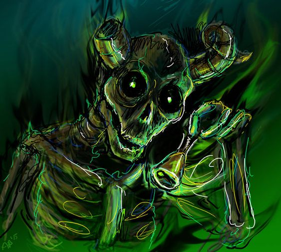

The Lich
Ele é um antigo ser cósmico que é a manifestação da morte inevitável de todas as coisas.
Sua essência foi depositada na Terra milhões de anos antes do início do show através de um cometa catalisador, mas tornou-se física
perto do final da Guerra dos Cogumelos
a partir de uma "bomba mutagênica" depois que ele possuiu uma pessoa
que havia sido submersa em resíduos mutagênicos.